Bregler and Omohundro [2] describe a solution to this problem, whereby a constraint surface is constructed within shape space, using a union of lower dimensional subspaces. We have altered and extended this technique by considering a two-level hierarchical approach, and by substituting the hyperplane subspaces for bounded regions.
The key to the approach is that a complex, non-linear region approaches linearity locally under magnification, and hence can be approximated by a combination of a number of smaller linear subregions. To build the subregions, a k-means cluster analysis is performed on the training data in shape space to find a number of prototypes. For each prototype, a number of nearest neighbours are taken from the training set and a PCA is performed on them. A subregion is produced which is centred on the cluster mean (not necessarily the same as the prototype), and bounded by a hyperellipsoid with a Malhalanobis radius of some specified value M (similar to a standard Linear PDM). The VSR is then represented as the union of these subregions (there are some subtleties; these are discussed later). Figure 1 demonstrates the process.
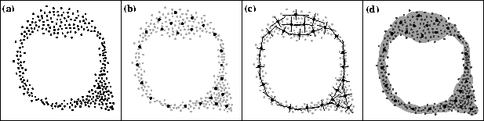
Figure 1: Building a valid shape region
from linear patches; (a) training data projected into a 2D shape
space,
(b) k-means cluster
centres, (c) principal axes and (d) the valid shape region.
In the case of the PDM, the shape space generally has upwards of 100 dimensions (twice the number of model landmark points). For this reason it is useful to adopt a two-level hierarchical approach; an initial global PCA is performed on the training data in order to produce a lower dimensional space. The linear subregions are then constructed in this new space instead of the high dimensional shape space. The reduced dimensionality decreases computation times substantially, and noise from outliers is reduced due to the removal of insignificant modes of variation by the global PCA.
For the VSR to be of practical use, it must be possible to apply what is known as the `nearest point' query: ``Given a general point in shape space, where is the nearest point in the VSR?'' This then facilitates the application of constraints to any given shape.
The simplest (but not only) way to apply these constraints is to find the closest (Euclidian distance) cluster mean and constrain the point to be within the associated subregion. The point should ideally be moved to the closest position within the subregion (hyperellipsoid-bounded), however this requires an expensive gradient descent computation, and instead we approximate the subregion as a hypercuboid. The alternative of moving the point directly towards the cluster mean is grossly inaccurate for eccentric hyperellipsoids. Figure 2 illustrates.
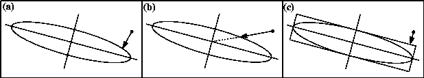
Figure 2: Constraining a general point to lie within a linear subregion;
(a) the correct way, (b) a bad approximate method and (c) a better
approximate method.
There are other ways to apply the constraints; Bregler describes a constraint function C on a shape as follows:
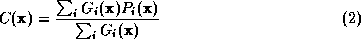
where 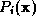 is the shape as projected into the subregion of cluster i and is the influence function for cluster i. Setting 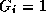 if cluster i is closest and if not results in the simple algorithm described above. Alternatively, can be a Gaussian, centred on cluster i's mean:
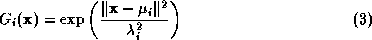
where is the cluster mean and  is a scale
factor related to the `size' of cluster i. A
sensible value for 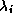 is the square root of the sum of the
eigenvalues from the local PCA. It is important to note that in the above
equation, the Euclidian distance (as opposed to the
Malhalanobis distance) is used; otherwise the influence function decays
too quickly off-axis for eccentric hyperellipsoids.
is a scale
factor related to the `size' of cluster i. A
sensible value for 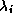 is the square root of the sum of the
eigenvalues from the local PCA. It is important to note that in the above
equation, the Euclidian distance (as opposed to the
Malhalanobis distance) is used; otherwise the influence function decays
too quickly off-axis for eccentric hyperellipsoids.
For a particular  , 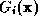 will be very small
for the majority of i. The calculation of can be
made more efficient by only including terms for which
is significant. A cutoff point of one
tenth of the maximum value is suitable.
, 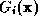 will be very small
for the majority of i. The calculation of can be
made more efficient by only including terms for which
is significant. A cutoff point of one
tenth of the maximum value is suitable.
Using the Gaussian influence functions has the effect of performing an interpolation at positions between neighbouring clusters, giving smoother joins, especially in cases where the subregions don't actually overlap. However, a side effect is that the notion of a concrete divide between valid and invalid shapes is lost, insofar as that if then it is not necessarily the case that 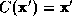 . It is thus important to only apply the constraint function once each time the shape needs constraining. Also this method is slower than the nearest-cluster method.
The method we describe here is based on Bregler and Omohundro's approach, but differs in two aspects. Firstly, they treated the linear patches as lower-dimensional hyperplanes, whereas we prefer to use hyperellipsoid-bounded regions. The hyperplanes method has the undesirable property that it extends the VSR indefinitely at extremities (see Figure 3). Secondly, we have introduced the idea of a hierarchical framework, whereby a global PCA is performed prior to the constraint process. This increases efficiency and also removes some training data noise.
An alternative approach is described in the statistics literature. The VSR can be modelled as a probability density function, approximated as a Gaussian mixture. Instead of using k-means to determine the Gaussians, the EM algorithm [4] can be used with equal, if not better, success.
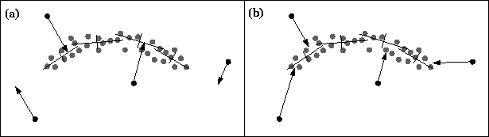
Figure 3: Constraining shape using (a) hyperplanes and (b) hyperellipsoids.
k is the number of clusters that are used to build the
VSR. is the number of nearest-neighbour
training examples used to build the linear
subregion for cluster i.
Between them, k and the  determine the degree of cluster
overlap.
determine the degree of cluster
overlap.
Our current strategy is to specify a fixed
degree of cluster overlap, O,
and set  , where is the number of members in the
k-means cluster. The argument for overlap is that it results in
smoother transitions between subregions.
Initial experimentation suggests that O = 1.5 produces a good
balance between accuracy (allowing all valid shapes) and specificity
(disallowing invalid shapes).
, where is the number of members in the
k-means cluster. The argument for overlap is that it results in
smoother transitions between subregions.
Initial experimentation suggests that O = 1.5 produces a good
balance between accuracy (allowing all valid shapes) and specificity
(disallowing invalid shapes).
The choice of k is data-dependent. The more complex and non-linear the VSR, the larger the number of clusters required to model it accurately; however, there is a trade-off between accuracy and speed. If speed is not an issue then k can be increased in the limit to E (but the choice of O must be reconsidered). For noiseless training data this produces the smoothest model; however any noise that is present is liable to be included in the model.
So far we have chosen k manually, based on knowledge about the expected shape of the VSR. It seems likely that it would be possible to find a sensible value for k automatically via some optimisation technique. If unsure, a good first guess would be k = E / 10.
Also important is the choice of M--the Malhalanobis radius of the clusters. We have chosen M=2.0 which, statistically, encompasses over 95% of the cluster members. A larger value generally leads an underconstrained shape space.